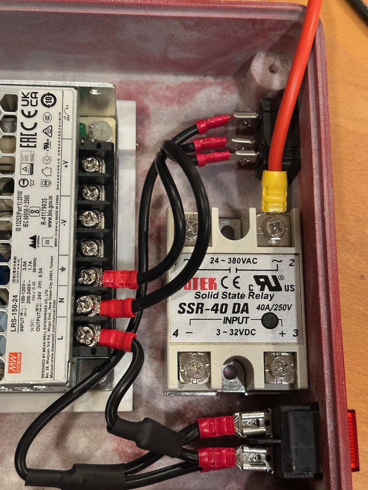
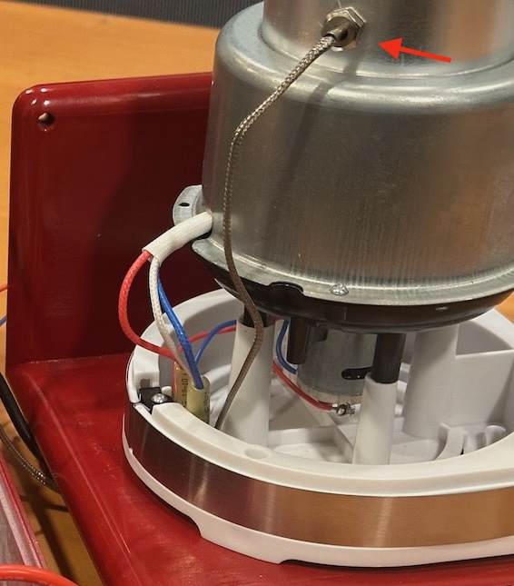
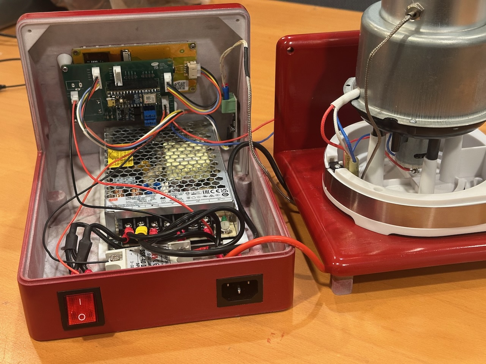
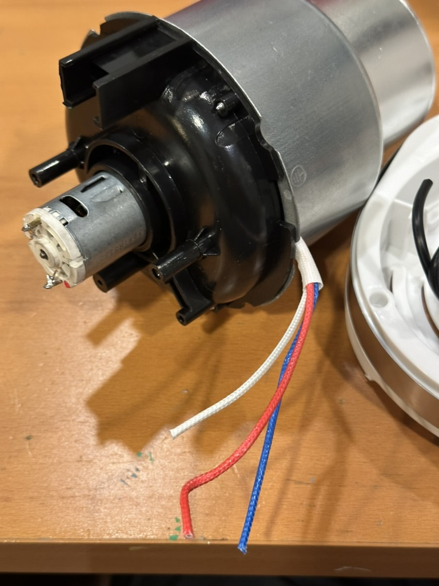
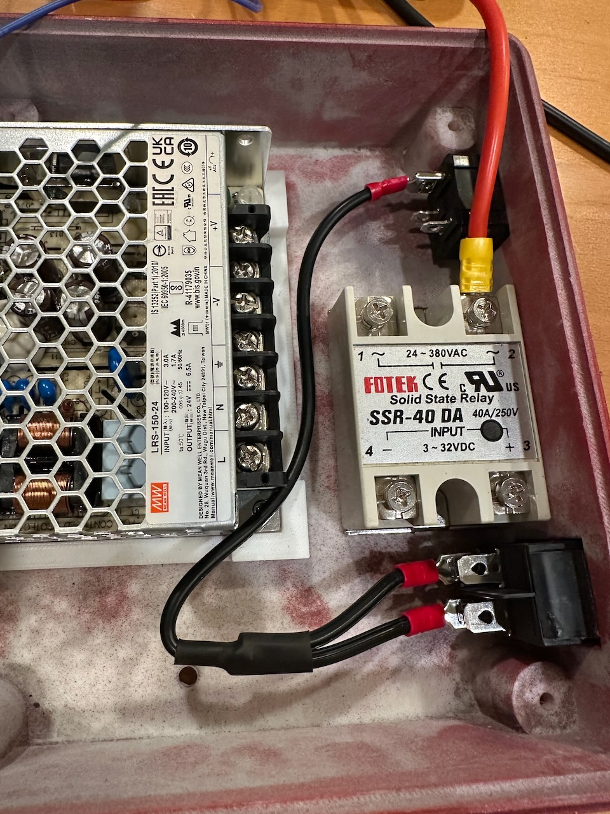

3D Printing
Enclosure and hardware
Printable case (top, bottom, handle, feet, standoffs), power supply mount, and an OnShape CAD model you can modify. PLA works fine; paint for a finished look.

Modified popcorn popper. ESP32 controller. PID temperature control. Roast profiles. Artisan logging. All open source.

This isn't just firmware. The repository covers the full build — enclosure, electronics, software, and operating docs.
Printable case (top, bottom, handle, feet, standoffs), power supply mount, and an OnShape CAD model you can modify. PLA works fine; paint for a finished look.
Eagle schematic and board files for the interface PCB. Hosts an Arduino Nano ESP32, fan speed controller, and JST connectors for the display, thermocouples, and SSR. Order from JLCPCB, PCBWay, or similar.

State machine for roast lifecycle. PID temperature control. Dual thermocouple monitoring. Profile-based setpoint interpolation. WiFi with WebSocket streaming. OTA updates. REST API.

Step-by-step guide to disassemble a 1200W popcorn popper, rewire the heater and fan, remove the stock thermostat, and install a thermocouple in the roasting chamber.

Four phases — printing, popper mod, assembly, and software setup.
Print the case parts in PLA. Optionally sand, prime, and paint for a finished appliance look. The 3MF file is in the repo.
Disassemble the popcorn popper. Rewire heater and fan. Remove the bimetallic thermostat strip. Drill and install the thermocouple.
Mount the PCB, Nextion display, power supply, and SSR in the case. Build the wire harnesses and connect everything.
Upload firmware via USB or OTA. Load Nextion display firmware from SD card. Connect WiFi, create a profile, and go.




The firmware runs on an Arduino Nano ESP32. It includes a touchscreen UI, web interface, and Artisan integration.
Define time / temperature / fan setpoints. The firmware interpolates between them during the roast. Profiles are stored on-device and editable from the browser.
Closed-loop PID keeps the roasting chamber on target. Dual thermocouples monitor chamber and exhaust temperatures.
3.5" display shows real-time temps, profile progress, and settings. Start/stop roasts and edit profiles on the device.
Profile editor, debug console, and live status at roaster.local. OTA firmware updates without opening the case.
Streams roast data over WebSocket to Artisan for real-time curves, logging, and analysis. Config files included.
Full API for profiles, PID tuning, roast control, and system status. OpenAPI spec in the repo.
This project controls line voltage and high temperatures. The firmware has safety systems, but understand the risks before building.
Everything needed for the build. Most parts ship from Amazon and AliExpress.
| Part | Source |
|---|---|
| 1200W Popcorn Popper | Amazon |
| Arduino Nano ESP32 | Amazon |
| Nextion 3.5" Display | AliExpress · Amazon |
| Custom PCB (Rev I) | Eagle files in repo |
| 24V Power Supply | Amazon |
| DC-DC Buck Converter | Amazon |
| Solid-State Relay (SSR-40DA) | AliExpress |
| K-Type Thermocouple + MAX6675 | Amazon |
| Motor Dimmer Module | AliExpress |
| Power Inlet Socket | Amazon |
| JST XH2.54 Connector Kit | Amazon |
| Silicone Wire (22ga + 16ga) | AliExpress |
Clone the repo, print the case, order the PCB, and start building.